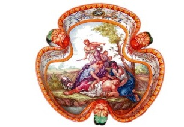
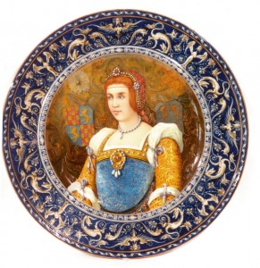
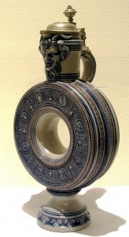

© Muzeul Național Peleș


 printați
printați
+40244 310 918 |
peles.ro@gmail.com |
Colecția de ceramică
Gândit sa îndeplinească o tripla functie, aceea de reprezentare, de loc de decizie politica și de lăcaș de cultura, Castelul Peleș, reședința regala de vara, rămâne unul dintre cele mai importante muzee din Romania datorita varietății și valorii deosebite a colecțiilor care îl alcătuiesc. Alături de celebra colecție de pictura ce cuprindea peste 200 de tablouri, Regele Carol I a pus bazele unei remarcabile colecții de arta decorativa, constituita treptat de-a lungul unei jumătăți de veac de domnie, prin achiziții importante de mobilier, arme, tapiserii și covoare, piese de metal prețios, sticlărie și ceramica, creații ale celor mai faimoase ateliere și manufacturi ale epocii.
|  | în cadrul acestui vast proiect artistic, colecția de ceramica (gresie, faianța, porțelan) a Castelului Peleș ocupa un loc bine determinat, atât ca numar (colecția se compune din peste 5000 de piese), cat și ca valoare (piesele ceramice onorează autorii și centrele ceramice europene și orientale la moda în secolul al XIX – lea și la începutul secolului al XIX – lea, ca și ateliere mai vechi). |
în anii ’70, în plin regim comunist, Muzeul Peleș inițiază un adevărat program de achiziție de piese de arta de la persoane particulare sau din anticariate, adăugând colecției deja închegate un plus valoric semnificativ.
Urmărit de ideea necesitații compunerii unui spațiu demn de reprezentare a tinerei Monarhii, Regele Carol I a reușit sa creeze la Sinaia, ca și în capitala, una dintre cele mai închegate colecții de arta decorativa, fără precedent în istoria noastră culturala. Cumpărate fie din străinătate, direct de la ateliere sau cu ocazia vizitelor ocazionate de Expozițiile Universale de la Paris, Londra sau Viena, fie din colecții particulare aparținând aristocrației locale și străine sau de la firme specializate de distribuție, piesele de ceramica din colecția Castelului Peleș celebrează bunul-gust, varietatea și măiestria artiștilor de altădată.
Deși Carol I a preferat pentru reședința sa de vara faianța europeana de imitație, ceramica orientala reprezinta un segment valoros al colecției. Achiziționate treptat, încă din primii ani după venirea sa în Romania, piesele orientale completează fericit atmosfera eclectica a Castelului. Alături de vasele chinezești din secolele XVIII – XIX, din ,,familia verde”, ,,alb-albastru” și ,,brune de Chine”, măiestrit decorate cu scene narative de mare intensitate, se regăsesc câteva rafinate vase Celadon din secolul al XVIII – lea. Ceramica japoneza provenita din celebrele ateliere Imari-Arita și Satzuma se distinge prin bogăția decorativa și cromatica, ca și prin varietatea formelor: platouri și vase decorative. în general, piesele ceramice extrem-orientale au fost achiziționate de pe piața constantinopolitana prin intermediul pictorului documentarist maltez, Amedeo Preziosi (1816 – 1882).
Ceramica persana este ilustrata de câteva vase pentru grăsime din secolele al XVII-lea și al XVIII – lea, reprezentative pentru ceramica din epoca Safavizilor (1502 – 1736). Piesele se caracterizează prin finețea glazurii turcoaz strălucitoare și semitransparenta ca și prin precizia desenului stilizat. Sumarul periplu prin atelierele ceramice orientale se încheiai cu ceramica de serie turceasca de la sfârșitul secolului al XVII-lea și începutul secolului al XVIII-lea, fabricata de faimosul atelier Iznik, remarcabila prin frumusețea și simetria decorului floral și geometric, ca și prin cromatica vie și variata.
Ceramica europeana constituie nucleul colecției și se definește printr-o mare diversitate stilistica. în cadrul segmentului european, faianța de secol XIX ocupa un loc central deoarece era purtătoarea valorilor istorice și ideologice ale epocii Renașterii. Ceramica spaniola este ilustrata de piese variate, decorate cu motive heraldice în tonuri închise de albastru-cobalt sau ocru, create de atelierele Toledo și Talavera.
Maiolica italiana de larga circulație în întreaga Europa se bucura de o reprezentare consistenta, atât din punctul de vedere al centrelor ceramice celebre, cat și al tipologiei dezvoltate în Peninsula și al motivelor decorative specifice fiecărei manufacturi. De altfel, în secolul al XIX-lea, ceramica italiana reușește sa cucerească piața, Curțile europene devenind principalele comanditare. Moda ceramicii à Curțile, cu rădăcini adânci în Renaștere, promovata de maeștrii ceramicii italiene, se impune cu succes și la curtea Regelui Carol I. Alegerile suveranului sunt influențate în mare măsura de educația artistica primita în sânul familiei sale de la Sigmaringen. Ceramica copiază sau se inspira din formele spectaculoase ale secolelor XV – XVI, piesele lui Luca delia Robbia, amforele cu anse-șerpi, vasele de farmacie, cupele trilobate, plăcile decorative și adaptează decorurile a rafaelesc, a grotesc, a istoriato, coppa d’amore, bella donna etc, noilor cuceriri tehnice înregistrate pana în secolul istorist.
în anul 1873, Societatea Amicii Bellelor Arte organizează la București prima sa expoziție. Pe lângă piese valoroase de arta plastica, mobilier, arme, monede, sunt expuse pentru prima data obiecte din ceramica din colecții private diverse, alături de vase istoriste din maiolica italiana. Gestul vorbea despre predilecția suveranului roman pentru faianța toscana și pentru spiritul ei de glorificare a trecutului. |
 |
Influențata de ceramica italiana, faianța istorista de sorginte franceza împrumuta și adaptează decorurile consacrate în Italia și circula sub denumirea generica de faianța à la venețiene. în colecția regala de la Castelul Peleș, Carol I a inclus piese valoroase create de atelierele Rouen, Marseilles, Bordeaux, Saint-Cloud, Paris, Moustiers, Sarreguemines, ca și reproduceri reușite după piesele naturaliste create de Bernard Palissy în secolul al XVI – lea. în ceea ce privește porțelanul francez, piesele din colecția muzeului sunt fie cópii după modele valoroase, create de cele mai cunoscute ateliere de profil din Franța, precum Sèvres, Paris, Saint – Cloud și Chantilly, fie producții istoriste de mare rafinament. Stilistic, porțelanurile franceze acoperă o întreaga paleta de stiluri, de la chinezării, la figurine și vase în stil rococo, neoclasic și Empire ajungând pana la Art Nouveau, curent reprezentat magistral de piesele imaginate de Clément Massier la 1900, designerul atelierului Golfe Juan, din Alpii maritimi. Comenzile regale au fost adresate magazinelor celebre precum Au vase etrusque. Faïances artistiques din Paris, în 1869, firmelor Jules Houry. Specialité de porcelaines et faïences d’art, în 1873 și Louise Cellière.Céramique centrale. Faïences françaises, în 1879 etc.
Contactele economice și culturale cu Franța și Italia, au determinat în Germania, dezvoltarea unei ceramici distincte, care se inspira din motivele decorative renascentiste și baroce consacrate, dar le adaptează formelor și spiritului german. Tara în care s-a inventat porțelanul este cel mai bogat valorificata în colecția regala, fapt explicabil, desigur, prin însăși originea suveranilor, dar și prin varietatea extraordinara a producției ceramice dezvoltate în secolul al XIX – lea. Colecția germana de porțelan a castelului cuprinde piese valoroase create în atelierele consacrate de la Meissen, Nymphenburg, Ilmenau, Rosenthal, Volkstedt, Villeroi-Boch Mettlach, Lönitz, Hamburg, Berlin, Grenzhauser, Villingen, Frankenthal etc.
Miscarea naționala de după 1871 de redeșteptare a conștiinței germanității a determinat și în acest domeniu reluarea producției de gresie de imitație Westerwald, cu apogeul în secolul al XVI-lea. Caracterizata prin policromie redusa (albastru, alb, cenușiu), prin aspectul dur și opac, prin decorul în relief, ca și prin larga difuzare a tipologiei vaselor Bellarmini, ceramica gen Westerwald din secolul al XIX-lea se bucura de o larga reprezentare în colecția regala.
Porțelanul german din colecția regala se caracterizează prin varietate tipologica și prin calitate artistica. Alături de figurinele inspirate ale atelierului Meissen – unele dintre ele -, copii după marii artiști ai secolului al XVIII-lea, precum Johann Joachim Kändler, celebru sculptor german și cel mai important modelator de porțelan din atelierul lui Böttger, stau piesele Ilmenau, Rosenthal și Nymphenburg: servicii de ceai, garnituri de masa, vase brûlle-parfume, platouri decorative etc. Printre exportatorii germani s-au numarat Kunstgewerbe, Werkstatt des Architecten R. Bichweiler din Hamburg, Königliche Hof–Kunst–Anstalt von C. W. Fleischmann din Nürnberg, E. Crauer din Creuznach, la 1881, J. von Schwartz, Artistische – Fajance und Terracotta – Fabrik din Leipzig, la 1884, Julius Lange, Glass, Porzellan und Majolica – Waaren – Lager din Berlin, la 1885 și Bayerische Kunstgewerbe – Verein din München, la 1896.
Ceramicii germane din colecția regala i se adaugă celebrele vase olandeze de Delft, din secolele al XVIII – lea și al XIX -lea, lucrate în camaïeu, inspirate din motivele decorative extrem – orientale, ca și porțelanurile fine fabricate în Austria, la Viena sau în centrele din Boemia, precum Pirkenhammer, fabrica de porțelan care funcționează și astăzi. Unul dintre cei mai prolifici furnizori de ceramica austriaca ai Casei regale romane a fost firma Carlo Vanni, la 1869 și 1872, Fabrik von Rococo – Schmuck und Kunst – Gegenständen, la 1872, Münzen Antiquitäten, la 1872 și J. Weidman la 1900, toate firme din Viena.
|  | Ceramica engleza din colecția regala provine din atelierele Wedgwood, Tunstall, Minton, Johnson Bros, Copeland și Doulton-Lambeth, din Londra. Imitație a ceramicii germane, în special al gresiei, a porțelanului chinezesc și a tipologiei pieselor din argint, ceramica englezeasca capătă treptat originalitate și valoare, devenind o arta de sine stătătoare. La începutul secolului al XIX-lea, Josiah Spode II, meșter ceramist din secolul al XVIII – lea la Stoke – upon -Trent, combina argila chinezeasca, gresia și glazura și obține bone China, care imita porțelanul, dar e mai ieftin. Regele Carol I achiziționează cea mai mare parte a pieselor englezești prin intermediul lui Theodor Held din Londra. Firma W. P. L. G. Philips, China and Glass Manufactures din capitala Regatului Unit livrează de asemenea, suveranului roman faianța Minton. |